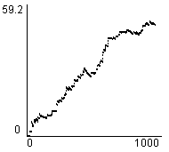
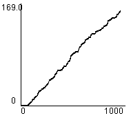
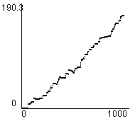
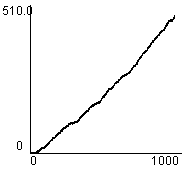
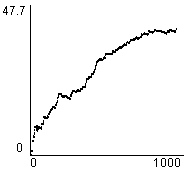
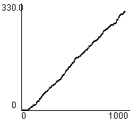
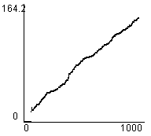
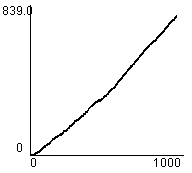

1. Editor
2. Simulator
3. Evaluation Tools
4. An Example Session
5. Algorithms
 a. Driving policies
a. Driving policies
 b. Traffic light controllers
b. Traffic light controllers
 1) Random
1) Random
 2) Most Cars
2) Most Cars
 3) RLD
3) RLD
 4) Hillclimbing
4) Hillclimbing
 5) Longest Queue
5) Longest Queue
 6) Relative LQ
6) Relative LQ
 7) Best first
7) Best first
 8) TC-1
8) TC-1
 9) TC-2
9) TC-2
 10) TC-3
10) TC-3
 11) TC-1++
11) TC-1++
 12) TC-2++
12) TC-2++
 13) TC-3++
13) TC-3++
 14) ACGJ-1
14) ACGJ-1
 15) ACGJ-2
15) ACGJ-2
 16) ACGJ-3
16) ACGJ-3
 17) GenNeural
17) GenNeural
Random
Essentially assigns a random value to each junction node every time slot, disregarding any data on road users or infrastructure. This value is a reward R for setting a traffic light on green, as seen in the change in waiting time for road users.
As it is random here, it has little meaning, and traffic flow suffers from this on all but the simplest of maps in comparison with other algorithms. The reason it might be of use, besides its simplicity to implement (no communication) and for comparison, is its robustness. Facing large amounts of spawning road users, a random algorithm will continue to get some to their destination, albeit inefficiently.
On a infrastructure as straightforward as Simple, there appears to be little difference in the flow of traffic, even with medium traffic flow. But as soon as it is used on a more complicated infrastructure over a longer period of time, one can notice how the disregarding of data about road users works out.
Tha randomisation gives, over a longer time frame, each traffic light about the same period for green as for red, making busy junctions clog up and free ones stay green uselessly. This is best demonstrated by giving the edge nodes on one side high spawning frequencies and the edge nodes on another low ones. Given an amount of traffic, the side with high frequencies will clog up in most cases in which the randomisation assigns it values about equal to the side with low frequencies.
This may seem a useless algorithm, but it is fairly close to what is used in current controllers! These do take in to account general traffic flow logic, but cannot change their behaviour according to up to date information on the density of road users.
| (Map: Simple) Average Junction Waiting Time |  |
| (Map: Simple) Total Road Users Arrived |  |
| (Map: Simple) Average Trip Waiting Time |  |
| (Map: Simple) Total Waiting Queue Length |  |
| (Map: Complex) Average Junction Waiting Time |  |
| (Map: Complex) Total Road Users Arrived |  |
| (Map: Complex) Average Trip Waiting Time |  |
| (Map: Complex) Total Waiting Queue Length |  |